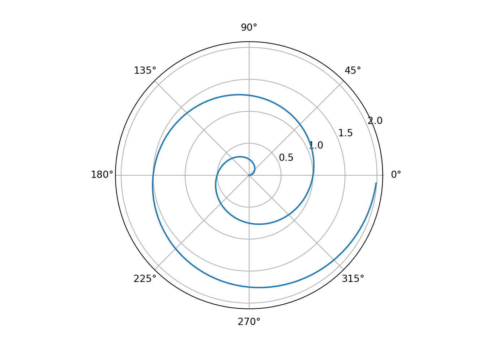

# Just some comments on YAML:# jupyter: python3 # should be unnecessary, or even bad if Py + R since use knitr for our crap# FYI:# VAPOR IS DOPE. But, requires light: vapor to get the real neon going on :)## Cyborg is BLACK, darkly is gray-black, slate is gray,# Cyborg# Darkly# Slate# Solar# Superhero# LIGHT:# Morph is fun# lux is classy# zephyr good light, rich# litera corporate normie# ONE MORE THING ON CITATIONS:# can use zotero, per:# https://quarto.org/docs/visual-editor/technical.html#citations-from-zotero# but we on WSL2, so... one point to to Mac.# can use: https://github.com/XFY9326/Zotero-WSL-ProxyServer# this requires running server + zotero on windows. not sure if my shrimp computer can handle it, probably better export bibtex and import to whatever# may also be better so that reproducible with git etc.
Welcome. This work replicates some of what is seen in Carron (2021), Pizzuti et al. (2020), and Sechrist et al. (2020). Basically, our objective in the analysis is take RNASeq and clinical data from TCGA (upstream of this analysis, data were pooled) and build a model to predict cancer diagnosis. The value of the work is to achieve a secondary, probably cheaper RNASeq-based tool that can accurately and precisely predict cancer status, as confirmed by FISH/current biochemical test.
The data are taken from TCGA/BRCA and anonymized, but are controlled per TCGA and therefore won’t be in the Git repo, feel free to email me, pat@patrickfinnerty.com.
The dataset is rather field-specific, but, broadly, numeric and high-dimensional, with a binary categorical prediction being the goal. Various categorical data exist from clinic that are one-hot encoded.
The technologies used here include:
Quarto (R Markdown 2.0) to generate this document using both Python and R libraries
Python and R package requirements are managed via Poetry and renv for… good practice, at the very least. Reproducibility/traceability in future otherwise - RNASeq data analysis tools in R, other statistical tools in Python
Visualization tools in Py and R - Machine learning libraries in Py (Sci-kit, XGB, PyTorch)
(stretch) deployment of model to Hugging Face, which is then called via API, to be fancy!
Coffee
Alright, here we go!
For a demonstration of a line plot on a polar axis, see ?@fig-polar.
Code
# | label: fig-polar# | fig-cap: "A line plot on a polar axis HOMIE WHA WHAT"import numpy as npimport matplotlib.pyplot as pltr = np.arange(0, 2, 0.01)theta =2* np.pi * rfig, ax = plt.subplots(subplot_kw={"projection": "polar"})ax.plot(theta, r)ax.set_rticks([0.5, 1, 1.5, 2])ax.grid(True)plt.show()

For a demonstration of a line plot on a polar axis, see ?@fig-polar.
# This cell demos all the plotly themes, as it is, probably just target the dark themes, idk if quarto creates a variable i can use conditionally. Yeah don't see documentation on it lol# This may b relevant, too much work for now though:# https://stackoverflow.com/questions/72992071/specifying-parameters-in-yml-file-for-quarto# | label: using plotly, dankness# | fig-cap: THIS IS DOPE!# import plotly.express as px# df = px.data.gapminder()# df_2007 = df.query("year==2007")# for template in [# "plotly",# "plotly_white",# "plotly_dark",# "ggplot2",# "seaborn",# "simple_white",# "none",# ]:# fig = px.scatter(# df_2007,# x="gdpPercap",# y="lifeExp",# size="pop",# color="continent",# log_x=True,# size_max=60,# template=template,# title="Gapminder 2007: '%s' theme" % template,# )# fig.show()
Alrighty so this will be the actual shit we use:
Code
# | label: fig-plotly-dark# | fig-cap: super plotlyimport plotly.io as pioimport plotly.express as px# pio.templates.default = "plotly_white"dark_template ="plotly_dark"df = px.data.gapminder()df_2007 = df.query("year==2007")fig = px.scatter( df_2007, x="gdpPercap", y="lifeExp", size="pop", color="continent", log_x=True, size_max=60,# this has a very specific position dawg template=dark_template, title="Gapminder 2007: current default theme",)fig.show()
Pizzuti, Laura, Eriseld Krasniqi, Giacomo Barchiesi, Marina Della Giulia, Fiorentino Izzo, Giuseppe Sanguineti, Paolo Marchetti, et al. 2020. “Distinct HR Expression Patterns Significantly Affect the Clinical Behavior of Metastatic HER2+ Breast Cancer and Degree of Benefit from Novel Anti-HER2 Agents in the Real World Setting.”International Journal of Cancer 146 (7): 1917–29. https://doi.org/10.1002/ijc.32583.
Sechrist, Haley, Akisha Glasgow, Philip Bomeisl, Hannah Gilmore, and Aparna Harbhajanka. 2020. “Concordance of Breast Cancer Biomarker Status Between Routine Immunohistochemistry/in Situ Hybridization and OncotypeDXqRT-PCR with Investigation of Discordance, a Study of 591 Cases.”Human Pathology 104 (October): 54–65. https://doi.org/10.1016/j.humpath.2020.07.022.